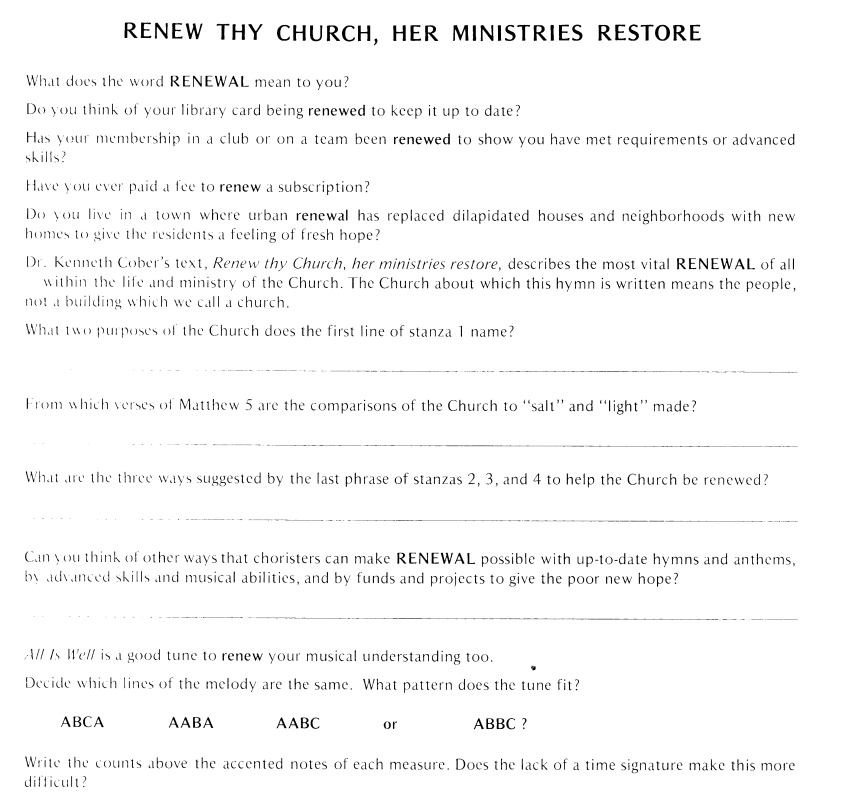
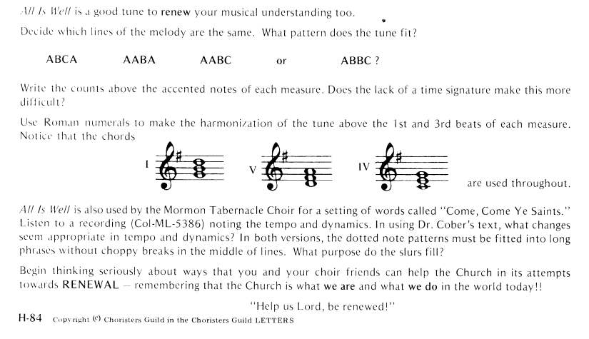

|
|
【更新教會】 |
|
1 Renew your church, our ministries restore: 2 Teach us your Word, reveal its truth divine, 3 Teach us to pray, for you are ever near, 4 Teach us to love, with strength of heart and mind,
|
1 求主更新教會的大事工：事奉、敬拜。 |
|
Renew Your Church https://hymnary.org/hymn/WAR2003/page/511
https://www.mobilehymns.org/english/Renew_Your_Church_ShapeNotes.html
|
|
|
|
|


https://youtu.be/XtXyTAWyraQ -
Renew Thy Church Her Ministries Restore - Hymn / Song Lyrics with
Instrumental backing music.
https://youtu.be/o4u25ThxTEE -
Renew Thy Church, Her Ministries Restore · Morgan State University Choir https://youtu.be/BNAQ3tmBCwg
| Text: | Renew Your Church, Her Ministries Restore |
| Author: | Kenneth L. Cober |
| Tune: | ALL IS WELL |
725. Renew Your Church, Her Ministries Restore
| Text Information | |
|---|---|
| First Line: | Renew the church, her ministries restore |
| Title: | Renew Your Church, Her Ministries Restore |
| Author: | Kenneth L. Cober (1960, alt.) |
| Meter: | 10.6.10.6.8.8.8.6. |
| Language: | English |
| Publication Date: | 1990 |
| Scripture: | ; ; ; ; ; ; |
| Copyright: | Words © 1966 K. L. Cober, copyright 1985 Judson Press |
| Tune Information | |
|---|---|
| Name: | ALL IS WELL |
| Meter: | 10.6.10.6.8.8.8.6. |
| Key: | G Major |
| Source: | Traditional English melody; The Sacred Harp, 1844 |
| Short Name: | Kenneth Lorne Cober |
| Full Name: | Cober, Kenneth Lorne, 1902-1993 |
| Birth Year: | 1902 |
| Death Year: | 1993 |
Born: July 12, 1902, Dayton, Ohio.
The son of missionaries, Cober grew up in Puerto Rico. He attended Bucknell University and Colgate Rochester Divinity School, and was pastor of the First Baptist Church, Canandaigua, New York; and the Lafayette Avenue Baptist Church, Buffalo, New York. He served the American Baptist state conventions in New York, Rhode Island and Connecticut, and was executive director of the Division of Christian Education for the American Baptist Convention (1953-70). He retired to Penney Farms, Florida. His works include:
The Church’s Teaching
Ministry, 1964
Hymnbook for Christian Worship, 1970 (committee member)
--www.hymntime.com/tch/
| Title: | ALL IS WELL (White) |
| Composer: | J. T. White |
| Meter: | 10.6.10.6.8.8.8.6 |
| Incipit: | 11231 71234 31217 |
| Key: | E♭ Major |
| Source: | Old English Melody;Sacred Harp, by Jesse White, 1844 |
| Copyright: | Public Domain |
| Short Name: | J. T. White |
| Full Name: | White, J. T. (Jesse Tom), 1821-1894 |
| Birth Year: | 1821 |
| Death Year: | 1894 |
Renew thy church, her ministries restore
Renew thy church, her ministries restore. Kenneth L. Cober* (1902-1993). Written in 1960 as a contribution to the evangelical campaign of the American Baptist. Church, the ‘Baptist Jubilee Advance’. One theme of this campaign was ‘The Renewal of the Church: Imperative to Evangelism’. The hymn was first sung at the American Baptist Convention in May 1960. It appeared in the Trinity Hymnal (1961), and subsequently in many books such as The Worshiping Church (1990) and the Chalice Hymnal (1995). In four verses, it makes good use of scriptural expressions (‘Make her again as salt throughout the land’, verse 1 line 2). The first line is altered in some books to ‘the church’ or ‘your church’
https://hymnology.hymnsam.co.uk/r/renew-thy-church,-her-ministries-restore

